2 / 33
Introdução
4 / 33
Objetivo: comparar BERTs, LLMs e modelos System One em sentimento com contexto e ironia, sem treinar nenhum modelo.
Introdução
5 / 33
Lacuna: nenhum trabalho compara as três famílias com contexto, ironia e calibração no mesmo protocolo.
Introdução
6 / 33
Exemplo do MT-CSD, alvo Tesla
Post: “Sleeping in Tesla while going 70mph on the freeway in San Diego”
Reply 1: “This shouldn’t be possible should it? I thought every so many seconds you had to interact with the steering wheel?”
Reply 2: “What’s the point of a self driving car that requires you to still interact with it?”
Reply 3 (texto alvo): “Reduces driver fatigue during long trips where it’s just hundreds of miles of straight highway.”
Qual o sentimento deste comentário sobre a Tesla, dada a conversa anterior?
Negativo, neutro ou positivo? Ground-truth: positivo (a favor).
T1: só o texto alvo · T2: texto alvo e conversa anterior · T3: irônicos contra não irônicos, sem contexto
Metodologia
8 / 33
| Família | O que é | Como obtemos a resposta | Modelos |
|---|---|---|---|
| BERT | codificador ajustado para uma tarefa fixa | camada de classificação; o NLI testa uma hipótese por rótulo | twitter-roberta, DeBERTa-NLI |
| LLM | gerador de texto que segue instruções | probabilidade de cada rótulo como próxima palavra | Qwen3.5-4B, Mistral-7B |
| System One | recebe uma pergunta tipada e devolve uma distribuição, sem gerar texto | probabilidade de cada opção, calibrada por temperatura | Kev-4B, Laya |
Metodologia
9 / 33
| Base | Texto | Rótulo original | Itens | Tarefas |
|---|---|---|---|---|
| MUStARD++ | falas de séries de TV | emoção pretendida | 1.171 | T1, T2, T3 |
| MT-CSD | comentários do Reddit | postura sobre a marca | 848 | T1, T2 |
| Sarcasm_NLP | tweets sobre energia nuclear | sentimento anotado | 5.929 | T3 |
| Filatova | resenhas da Amazon | estrelas | 1.254 | T3 |
Metodologia
10 / 33
Metodologia
11 / 33
| Variação testada | O que muda | Diferença? |
|---|---|---|
| Ordem das opções | v1, v2, v3: a posição de cada rótulo na lista | Sim, no Mistral-7B: muda 36,5% das respostas; até 40 pp nos irônicos. Outros: 1–3 pp |
| Descrição das opções | Quem recebe a definição de cada rótulo | Pouca: a % de “neutro” muda ~10 pp; a acurácia, até 12 pp, mais no Mistral-7B |
| Pergunta do Sarcasm_NLP | “the topic” × “nuclear power” × assunto nuclear amplo | Sim: os LLMs mudam até 21 pp e a ordem dos modelos muda |
| Descrição do alvo | “Tesla” × “Tesla (the electric car company…)” | Não: todos entre −3 e +3 pp |
Só a ordem (no Mistral-7B) e a pergunta do Sarcasm_NLP mudam o quadro; os resultados a seguir usam a média das três ordens.
Resultados · Variações do prompt
13 / 33
Os resultados a seguir usam a média das três ordens das opções.
| Mistral-7B, irônicos do MUStARD++ | Ordem das opções | “negativo” | “neutro” | Acurácia |
|---|---|---|---|---|
| v1 | negativo, neutro, positivo | 50,7% | 29,6% | 50,7% |
| v2 | positivo, neutro, negativo | 23,6% | 63,6% | 23,6% |
| v3 | neutro, positivo, negativo | 10,6% | 78,4% | 10,6% |
Sem ironia, a diferença costuma ser pequena (11 de 16 casos até 3 pp); nos irônicos, chega a 40 pp.
Resultados · Variações do prompt
14 / 33
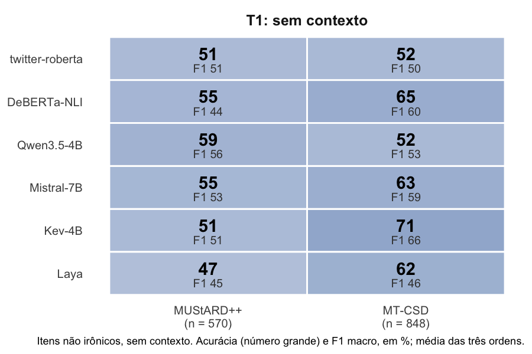
Resultados · T1: texto isolado
15 / 33
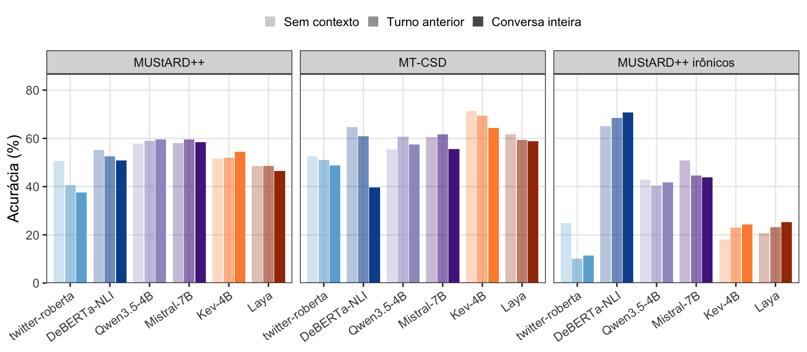
Acurácia sem contexto, com o turno anterior e com a conversa inteira.
Resultados · T2: contexto
16 / 33
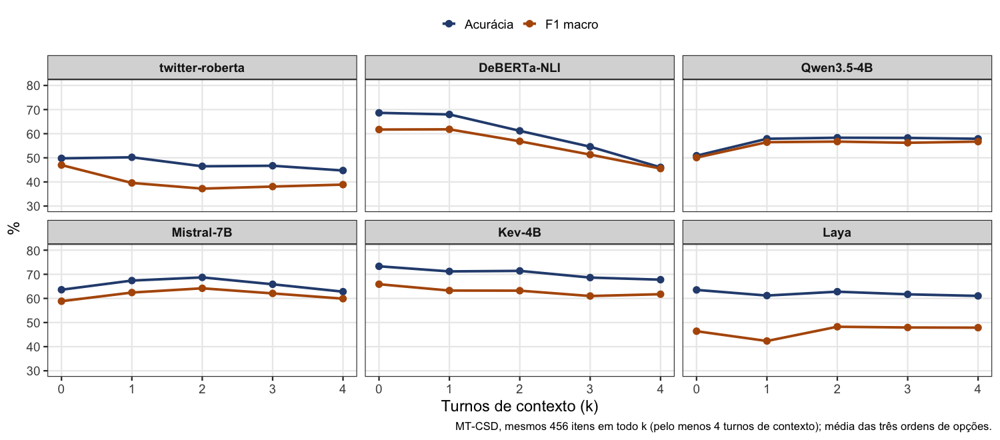
Resultados · T2: contexto
17 / 33
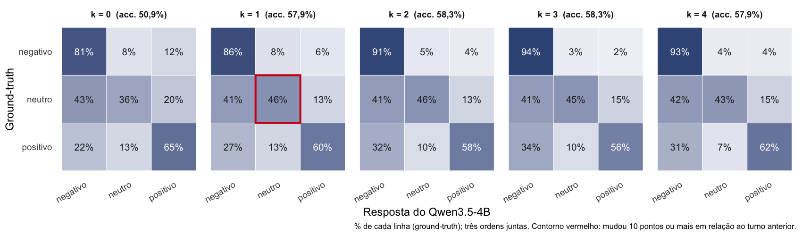
Resultados · T2: contexto
18 / 33
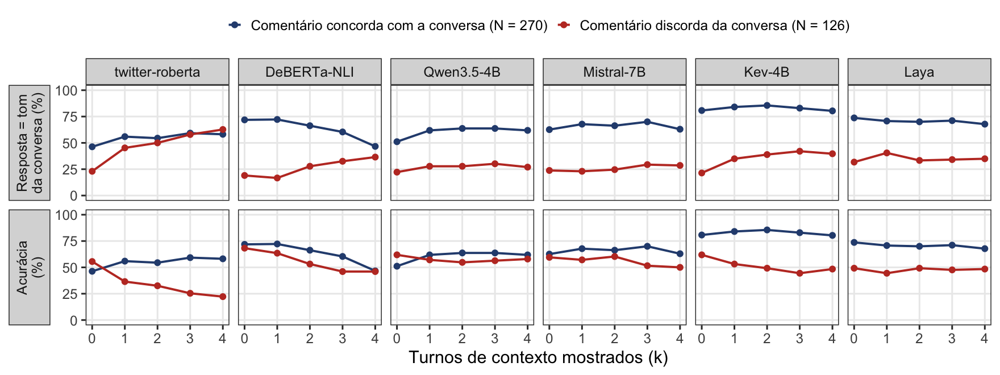
MT-CSD, mesmos itens em todo k. Azul: o comentário concorda com o tom da conversa (n = 270); vermelho: discorda (n = 126).
Resultados · T2: contexto
19 / 33
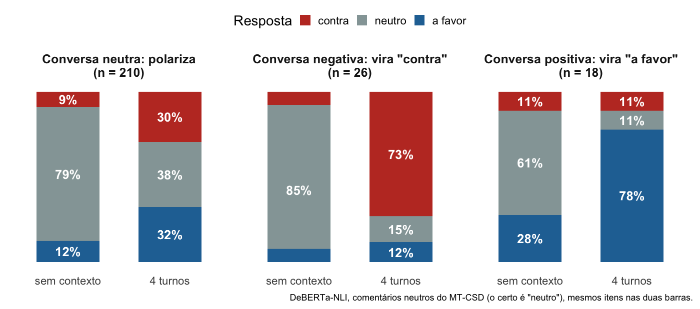
Resultados · T2: contexto
20 / 33
Resultados · T2: contexto
21 / 33
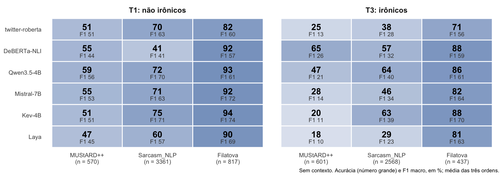
Resultados · T3: ironia
22 / 33
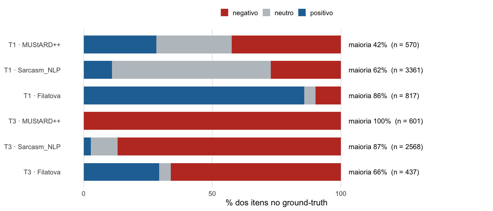
Resultados · T3: ironia
23 / 33
Cada item pesa igual
Premia a classe majoritária: no Filatova, chutar sempre “positivo” já dá 86%.
Cada classe pesa igual; junta precisão e revocação
Com uma classe só (irônicos do MUStARD++), não passa de 33.
Cada classe pesa igual
Chutar sempre a mesma classe dá 33% em qualquer base.
Resultados · T3: ironia
24 / 33
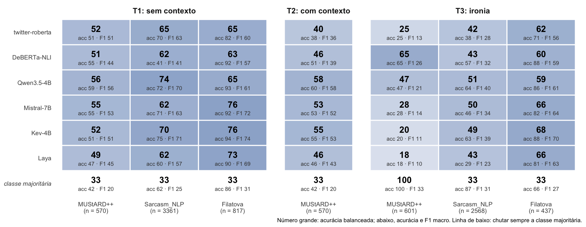
Resultados · T3: ironia
25 / 33
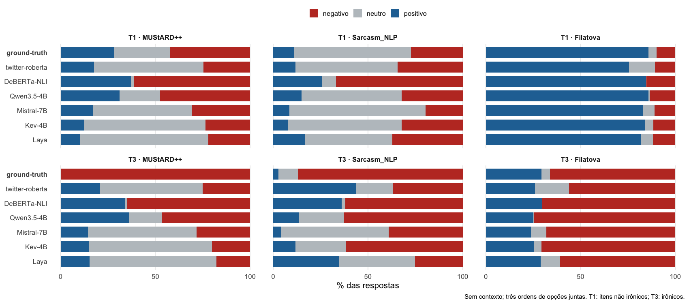
Resultados · T3: ironia
26 / 33
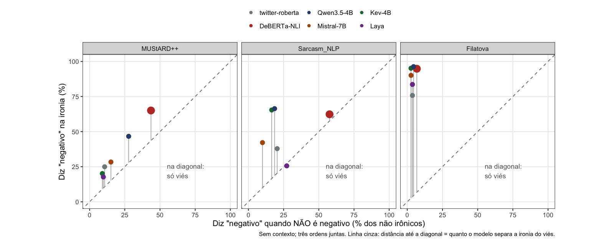
Resultados · T3: ironia
27 / 33
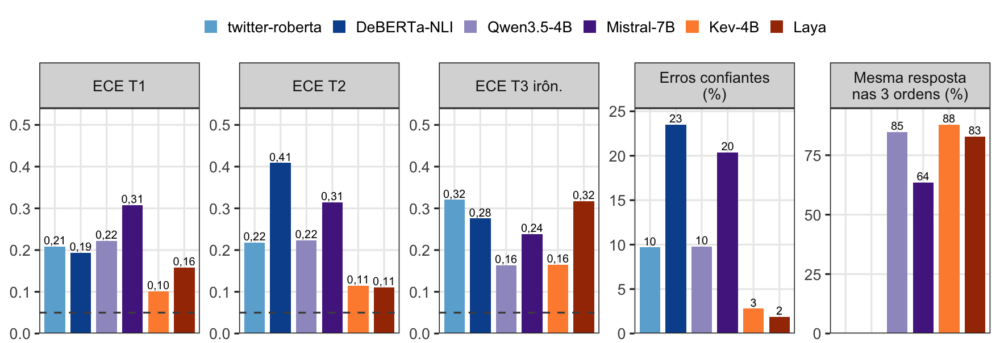
ECE: distância média entre a confiança e o acerto (0 = perfeito; tracejado em 0,05 = bem calibrado). T1 e T2: MUStARD++ e MT-CSD; T3: irônicos das três bases. Ordem v1.
Resultados · Outras análises
28 / 33
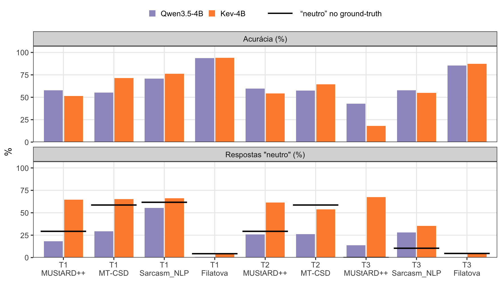
Mesmos itens, ordem v1. Traço preto: % de neutro no ground-truth.
Resultados · Outras análises
29 / 33
Conclusão
31 / 33
Conclusão
32 / 33